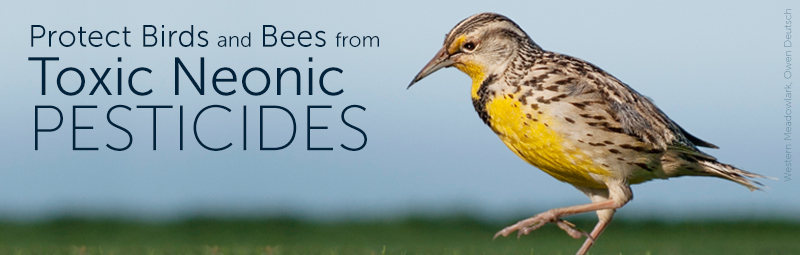

Protect Birds From Toxic Neonic Pesticides
It's time for EPA to get serious about neonicotinoid pesticides!
Please write your Member of Congress today and ask her or him to cosponsor H.R. 1284, the Saving America's Pollinators Act of 2015. This bill directs the Environmental Protection Agency (EPA) to suspend registration of a toxic group of pesticides called neonicotinoids, or "neonics," which are causing serious damage to birds, bees, and aquatic life.

Background
Neonicotinoid chemicals-now the most commonly used insecticides on earth-have lethal effects on birds, bees, butterflies and other pollinators. American Bird Conservancy and a coalition of conservation organizations, beekeepers, scientists and business leaders are asking the EPA to suspend the four most toxic neonicotinoids until a comprehensive study of their effects on wildlife and people is completed.
Two years ago, ABC released a groundbreaking report, "The Impact of the Nation's Most Widely Used Insecticides on Birds," and called on the EPA to remove these insecticides from the market. Since that time, hundreds more studies have been published addressing the adverse effects on birds, bees, Monarch butterflies, and entire ecosystems.
In the U.S., sales of neonics continue to skyrocket with no restriction. Often they are used as a seed treatment. For crops such as corn it's nearly impossible for farmers to buy seeds that have not been pre-treated with neonics. The seed coatings are deadly to bees and also to songbirds. And when planted, most of the chemicals wash into the soil and end up in our waterways, killing off the aquatic invertebrates relied upon by birds, bats, and other wildlife.
Despite the hundreds of millions of acres on which the neonics are applied, scientists are finding that these chemicals are not actually boosting agricultural yields.
Please urge your U.S. Representative to cosponsor the Saving America's Pollinators Act of 2015. The bill requires EPA to suspend the registration of neonicotinoid insecticides pending thorough review of the adverse effects on birds, bees, butterflies, bats and other beneficial organisms.